Red Fort
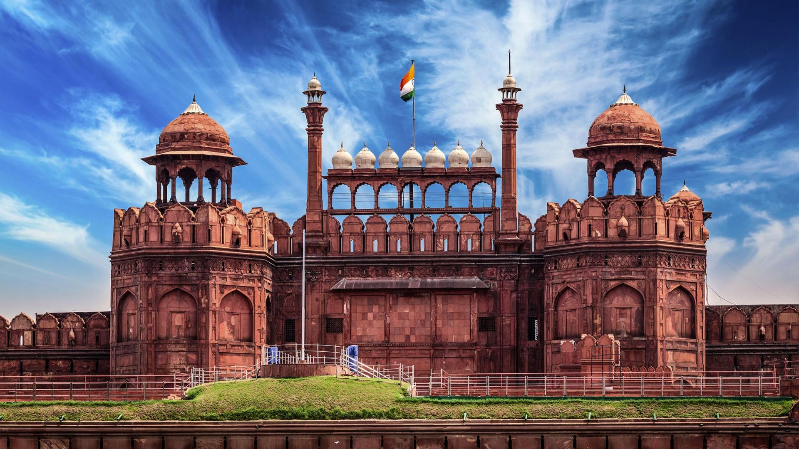One of the historical tourist places in India, the Red Fort was constructed over ten years from 1638 to 1648. This fort was constructed when Shah Jahan shifted the capital from Agra to Delhi and it was then known as the Qila-e-Mubarak. This octagonal fort is one of the most famous historical places in north India and is also the site where the President gives his speech on Independence Day.
The Red Fort is a historic fort in the city of Delhi in India. It was the main residence of the emperors of the Mughal dynasty for nearly 200 years, until 1856. It is located in the center of Delhi and houses a number of museums. In addition to accommodating the emperors and their households, it was the ceremonial and political center of the Mughal state and the setting for events critically impacting the region.
Constructed in 1639 by the fifth Mughal Emperor Shah Jahan as the palace of his fortified capital Shahjahanabad, the Red Fort is named for its massive enclosing walls of red sandstone and is adjacent to the older Salimgarh Fort, built by Islam Shah Suri in 1546. The imperial apartments consist of a row of pavilions, connected by a water channel known as the Stream of Paradise (Nahr-i-Bihisht). The fort complex is considered to represent the zenith of Mughal creativity under Shah Jahan,[citation needed] and although the palace was planned according to Islamic prototypes, each pavilion contains architectural elements typical of Mughal buildings that reflect a fusion of Timurid and Persian traditions. The Red Fort’s innovative architectural style, including its garden design, influenced later buildings and gardens in Delhi, Rajasthan, Punjab, Kashmir, Braj, Rohilkhand and elsewhere.
The fort was plundered of its artwork and jewels during Nadir Shah's invasion of the Mughal Empire in 1747. Most of the fort's precious marble structures were subsequently destroyed by the British following the Revolt of 1857. The forts's defensive walls were largely spared, and the fortress was subsequently used as a garrison. The Red Fort was also the site where the British put the last Mughal Emperor on trial before exiling him to Rangoon in 1858.
Every year on the Independence day of India (15 August), the Prime Minister hoists the Indian "tricolour flag" at the main gate of the fort and delivers a nationally-broadcast speech from its ramparts.
It was designated a UNESCO World Heritage Site in 2007 as part of the Red Fort Complex.
History
Emperor Shah Jahan commissioned construction of the Red Fort on 12 May 1639, when he decided to shift his capital from Agra to Delhi. Originally red and white, the Shah's favourite colours, its design is credited to architect Ustad Ahmad Lahauri, who also constructed the Taj Mahal. The fort lies along the Yamuna River, which fed the moats surrounding most of the walls. Construction began in the sacred month of Muharram, on 13 May 1638. Supervised by Shah Jahan, it was completed on 6 April 1648. Unlike other Mughal forts, the Red Fort's boundary walls are asymmetrical to contain the older Salimgarh Fort. The fortress-palace was a focal point of the medieval city of Shahjahanabad, which is present-day Old Delhi. Its planning and aesthetics represent the zenith of Mughal creativity prevailing during Shah Jahan's reign.[citation needed] His successor Aurangzeb added the Pearl Mosque to the emperor's private quarters, constructing barbicans in front of the two main gates to make the entrance to the palace more circuitous.
The administrative and fiscal structure of the Mughal dynasty declined after Aurangzeb, and the 18th century saw a degeneration of the palace. When Jahandar Shah took over the Red Fort in 1712, it had been without an emperor for 30 years. Within a year of beginning his rule, Shah was murdered and replaced by Farrukhsiyar. To raise money, the silver ceiling of the Rang Mahal was replaced by copper during this period. Muhammad Shah, known as 'Rangila' (the Colourful) for his interest in art, took over the Red Fort in 1719. In 1739, Persian emperor Nadir Shah easily defeated the Mughal army, plundering the Red Fort including the Peacock Throne. Nadir Shah returned to Persia after three months, leaving a destroyed city and a weakened Mughal empire to Muhammad Shah. The internal weakness of the Mughal empire made the Mughals titular heads of Delhi, and a 1752 treaty made the Marathas protectors of the throne at Delhi. The 1758 Maratha conquest of Lahore and Peshawar placed them in conflict with Ahmad Shah Durrani. In 1760, the Marathas removed and melted the silver ceiling of the Diwan-i-Khas to raise funds for the defence of Delhi from the armies of Ahmed Shah Durrani. In 1761, after the Marathas lost the third battle of Panipat, Delhi was raided by Ahmed Shah Durrani. Ten years later, Shah Alam ascended the throne in Delhi with Maratha support. In 1783 the Sikh Misl Karorisinghia, led by Baghel Singh Dhaliwal, conquered Delhi and the Red Fort briefly. In 1788, a Maratha garrison permanently occupied Red fort and Delhi and ruled on north India for next two decades until they were usurped by the British East India Company following the Second Anglo-Maratha War in 1803.
During the Second Anglo-Maratha War in 1803, forces of British East India Company defeated Maratha forces in the Battle of Delhi; this ended Maratha rule of the city and their control of the Red Fort. After the battle, the British took over the administration of Mughal territories and installed a Resident at the Red Fort. The last Mughal emperor to occupy the fort, Bahadur Shah II, became a symbol of the 1857 rebellion against the British in which the residents of Shahjahanbad participated.
Despite its position as the seat of Mughal power and its defensive capabilities, the Red Fort was not defended during the 1857 uprising against the British. After the rebellion failed, Bahadur Shah II left the fort on 17 September and was apprehended by British forces. He returned to Red Fort as a prisoner of the British, was tried in 1858 and exiled to Rangoon on 7 October of that year. With the end of Mughal reign, the British sanctioned the systematic plunder of valuables from the fort's palaces. All furniture was removed or destroyed; the harem apartments, servants' quarters and gardens were destroyed, and a line of stone barracks built. Only the marble buildings on the east side at the imperial enclosure escaped complete destruction, but were looted and damaged. While the defensive walls and towers were relatively unharmed, more than two-thirds of the inner structures were destroyed by the British. Lord Curzon, Viceroy of India from 1899–1905, ordered repairs to the fort including reconstruction of the walls and the restoration of the gardens complete with a watering system.
Most of the jewels and artworks of the Red Fort were looted and stolen during Nadir Shah's invasion of 1747 and again after the failed Indian Rebellion of 1857 against the British. They were eventually sold to private collectors or the British Museum, British Library and the Victoria and Albert Museum. For example, the Koh-i-Noor diamond, the jade wine cup of Shah Jahan and the crown of Bahadur Shah II are all currently located in London. Various requests for restitution have so far been rejected by the British government.
1911 saw the visit of the British king and queen for the Delhi Durbar. In preparation of the visit, some buildings were restored. The Red Fort Archaeological Museum was also moved from the drum house to the Mumtaz Mahal.
The INA trials, also known as the Red Fort Trials, refer to the courts-martial of a number of officers of the Indian National Army. The first was held between November and December 1945 at the Red Fort. On 15 August 1947, the first Prime Minister of India Jawaharlal Nehru raised the Indian national flag above the Lahore Gate. On each subsequent Independence Day, the prime minister has raised the flag and given a speech that is broadcast nationally.
After Indian Independence, the site experienced few changes, and the Red Fort continued to be used as a military cantonment. A significant part of the fort remained under Indian Army control until 22 December 2003, when it was given to the Archaeological Survey of India for restoration. In 2009 the Comprehensive Conservation and Management Plan (CCMP), prepared by the Archaeological Survey of India under Supreme Court directions to revitalise the fort, was announced.
Architecture
The Red Fort has an area of 254.67 acres (103.06 ha) enclosed by 2.41 kilometres (1.50 mi) of defensive walls, punctuated by turrets and bastions and varying in height from 18 metres (59 ft) on the river side to 33 metres (108 ft) on the city side. The fort is octagonal, with the north-south axis longer than the east-west axis. The marble, floral decorations and double domes in the fort's buildings exemplify later Mughal architecture.
It showcases a high level of ornamentation, and the Kohinoor diamond was reportedly part of the furnishings. The fort's artwork synthesises Persian, European and Indian art, resulting in a unique Shahjahani style rich in form, expression and colour. Red Fort is one of the building complexes of India encapsulating a long period of history and its arts. Even before its 1913 commemoration as a monument of national importance, efforts were made to preserve it for posterity.
The Lahori and Delhi Gates were used by the public, and the Khizrabad Gate was for the emperor. The Lahore Gate is the main entrance, leading to a domed shopping area known as the Chatta Chowk (covered bazaar).
Interesting fact: The Red fort was actually white as it was made of limestone. The British painted it red when the limestone started chipping off.
Entry fee: Indians- INR 10
Foreigners- INR 250
Open from: 9:30am- 4:30pm daily (Closed on Mondays)
Must see: The Palace of Colors or the ‘Rang Mahal’ where the emperor’s wives, mistresses and maids resided.
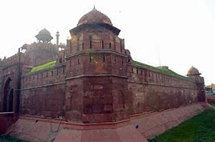
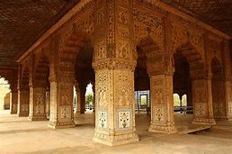
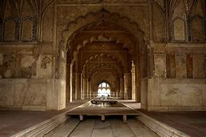
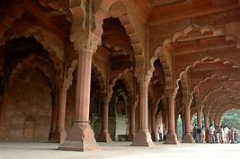
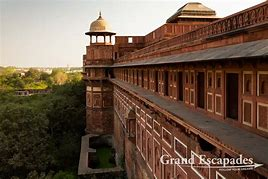
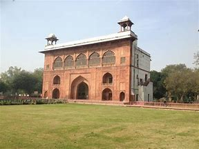
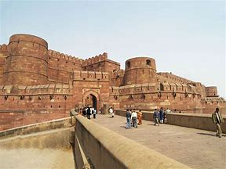
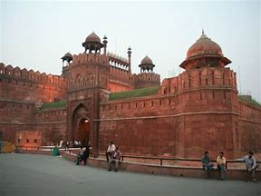
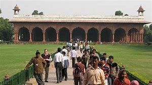
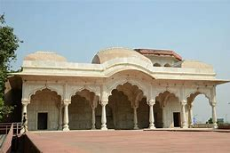
Developed By: Vineet Choudhary